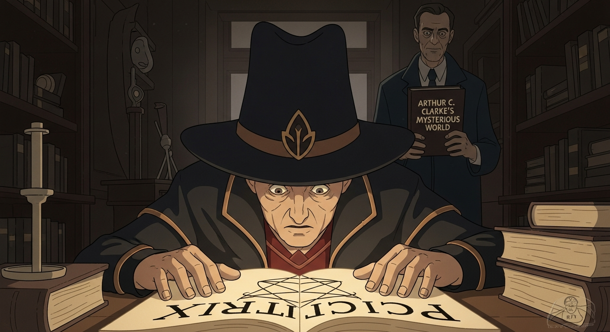
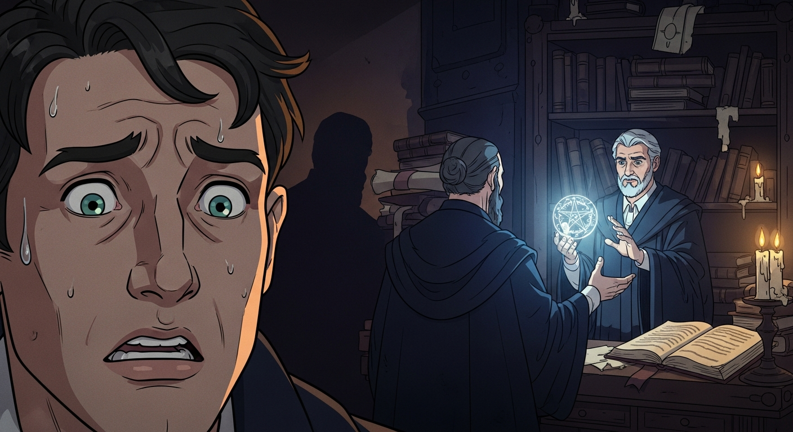

Agrippa, brow furrowed, wrestles with the *Picatrix*. He seeks *Invisibilia Dei*, a whisper of true alchemy. Dr. Sledge appears, offering Arthur C. Clarke's *Mysterious World*? A strange key. Agrippa eyes it, a poisoned gift perhaps, yet the allure of the unknown…it sings. Alexander F watches, unseen.

Agrippa, trusting Dr. Sledge’s academic air, opens Clarke. He finds a cipher pointing to the *Alchemist's Last Secret*. As Agrippa decodes it, the book glows, ejecting a page resembling the *Necronomicon*. Dee bursts in, warning that Sledge's knowledge is a trap. Do you take the Devil's bargain, or remain in blissful ignorance?